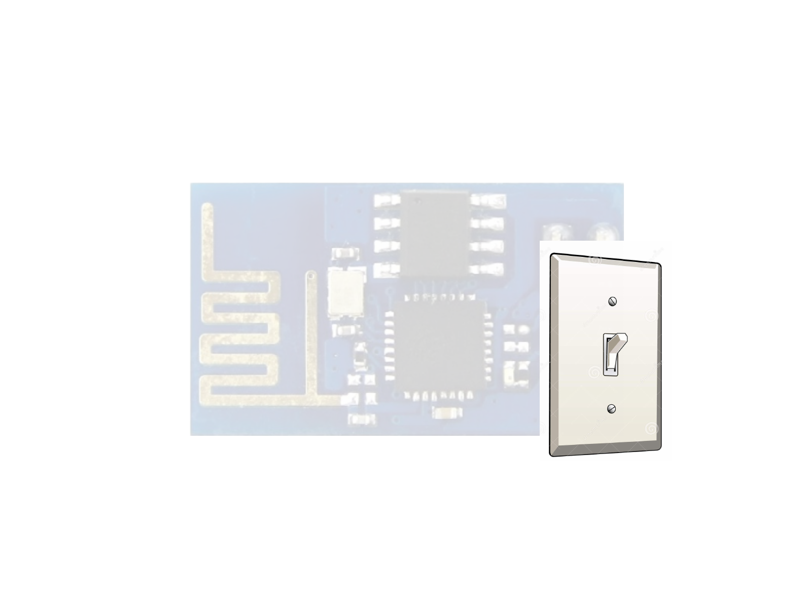

http://goo.gl/W6crOM
Introduction to The ESP8266
Micro Controller

Requirements for this class
Computer – Linux, Mac, or Windows
ESP8266 Development board
USB UART (programming cable)
Arduino IDE
ESP8266 Arduino Core

Outline for this class
Introduction to Micro Controllers & GPIOs
Overview of the ESP8266 Hardware & Software
Development
Introduction to Arduino & Arduino IDE
Install the Arduino IDE & Upload a Sketch
Build a Web Server to control the LED on the
ESP8266 remotely over WiFi
How to apply what you learned to your own designs
Resources

What is a Micro Controller?
“ A microcontroller (or MCU for microcontroller unit) is a small
computer on a single integrated circuit. In modern terminology, it is
a System on a chip or SoC. A microcontroller contains one or more
CPUs (processor cores) along with memory and programmable
input/output peripherals. Program memory in the form of
Ferroelectric RAM, NOR flash or OTP ROM is also often included on
chip, as well as a small amount of RAM. Microcontrollers are
designed for embedded applications, in contrast to the
microprocessors used in personal computers or other general
purpose applications consisting of various discrete chips.”
~ Wikipedia
What is a Micro Controller?
Small Computer in a Chip
Special purpose
Does one thing well
Embedded inside other device
VS
All Micro Controllers have
CPU (central processing unit)
RAM (random-access memory)
ROM (read-only memory)
I/O (input and output)

Input
Data from some
external source is
being fed into the
system to be
manipulated
Output
Formatted date can be
transmitted efficiently
to outside devices

Digital
Data (signal) expressed as
series of the digits 0 and 1,
typically represented by
values of a physical quantity
such as voltage or magnetic
polarization.
Analog
Data (signal) or
information represented
by a continuously
variable physical quantity
such as spatial position
or voltage.

Specialized GPIO
UART
universal asynchronous receiver/transmitter
SPI
Serial Peripheral Interface
I2C
Inter-Integrated Circuit
ADC
Analog to Digital Converter
DAC
Digital to Analog Converter (PWM)

Special GPIO
Limited to what pins are used
Limited number of interfaces
The ESP8266
Designed by Espressif Systems.

The ESP8266
The ESP8266 is a self-contained
WiFi IoT solution.
The ESP8266
The ESP8266 can be used as a bridge for
existing micro controllers to WiFi networks
accessible using AT commands
The ESP8266
The ESP8266 is capable of running self
contained applications using a variety of
development environments
The ESP8266
Voltage 3.3V
Current consumption 10uA – 170mA
Flash memory attachable 16MB max (512K normal)
Processor Tensilica L106 32 bit
Processor speed 80-160MHz
RAM 32K + 80K
GPIOs 17 (multiplexed)
Analog to Digital 1 input with 1024 steps
802.11 support b/g/n/d/e/i/k/r
Max concurrent TCP 5
The ESP8266
ESP8266 Arduino (Uno)
GPIOs 17 14
Analog input 1 6
PWM channels 8 6
Clock speed 80/160MHz 16MHz
Processor Tensilica Atmel
SRAM 45KBytes 2KBytes
Flash 512Kb-16MB 32KB (on chip)
Operating Voltage 3.3V 5V
Max current per I/O 12mA 40mA
UART (hardware) 1 1⁄2 1
SPI (hardware) 1(2) 1
I2c Yes Yes
I2s Yes No
Networking Built-in (WiFi) Separate
The ESP8266
There are a variety of board styles available
ESP-1 and ESP-12

The ESP8266
There is only one ESP8266 processor and it is
this processor that is found on ALL breakout
boards.

The ESP8266
What distinguishes one board from another?
the number of GPIO pins exposed
the amount of flash memory provided
and the package footprint.
From a programming perspective,
they are all the same.
The ESP8266
The ESP8266
Name Description
VCC 3.3V
GPIO 13 Also used for SPI MOSI
GPIO 12 Also used for SPI MISO
GPIO 14 Also used for SPI Clock
GPIO 16 Regular GPIO
CH_PD Chip enable. Should be high for normal operation
ADC Analog to digital input
REST External reset 0 – Reset 1 – Normal
TXD UART 0 transmit (GPIO 1)
RXD UART 0 Receive (GPIO 3)
GPIO 4 Regular GPIO
GPIO 5 Regular GPIO
GPIO 0 Should be high on boot, low for flash update
GPIO 2 Should be high on boot
GPIO 15 Should be low on boot and flash
GND Ground
The ESP8266

The ESP8266
WiFi
An ESP8266 can be an Access
Point, a Station, or both at the
same time.
802.11 b/g/n/d/e/i/k/r

What is Arduino?
Open-Source hardware and software project
User community & support
Licensed under the GNU General Public License
Anyone can manufacture Arduino boards and software
Available commercially or as do-it-yourself kits

What is Arduino IDE?
Integrated Development Environment
Code Editor
Libraries
Compiler
Upload Utility
What is Arduino IDE?
Integrated Development Environment
Makes it easy to write code and upload it to the board
Cross-platform application ~ Windows, Mac OS & Linux
Programs written with the IDE are called a "sketch"
Supports C and C++ using special rules
Software library for common input and output procedures


Install the Arduino IDE
Upload Blink sketch
select “Blink” from the
File > Examples > ESP8266 menu
If using ESP-12 Add
#define LED_BUILTIN 2
Just above the line
void setup() {
Install the Arduino IDE
Upload sketch from the
Sketch > Upload menu
Or Click on the Upload Icon

Troubleshoot

Building a Web Server
Create a New Sketch
File > New
Every Arduino Sketch has two basic functions
Startup() And Loop()


Building a Web Server
Save the Sketch
File > Save
Name the Sketch
WiFiWebControl

Building a Web Server
Edit The Variables in the Sketch
Upload The Sketch to the ESP8266
Connect & Control the ESP8266 over WiFi
Review Source Code Line by Line

Conclusion